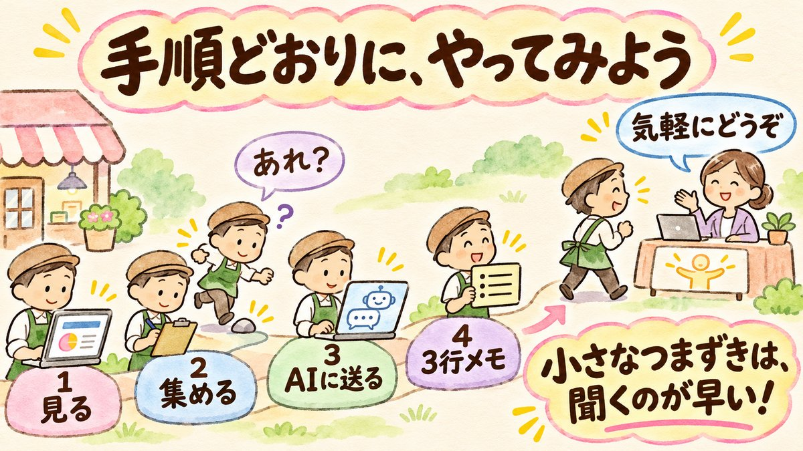

セミナーで紹介した流れを、ご自分の店でやってみるための資料です。人気店の口コミから選ばれる理由を読み解き、明日やる1つを決めます。
セミナー時：スライド 当日のスライドを見る セミナーでお見せしたスライドです。全体像をつかむための資料です 実践用：詳細版 手を動かして学ぶ、ワーク資料 実際にやってみると出てくる細かなつまずきにも対応した詳細版です。口コミの読み方・AIへの指示文3本・3行メモまずスライドで全体をつかみ、ワーク資料を見ながら手を動かします。
資料を開くと聞かれます。別途お伝えしているパスワードを入力してください。
「このブラウザで30日間おぼえる」に印を付けたまま入ると、30日間は聞かれません。

小さなつまずきは、聞くのが早い！ やってみると、分からないことがたくさん出てきます。そのときは気軽に、よろず支援拠点の個別相談で聞いてみてください。
主催：岡山県よろず支援拠点 講師：ITコンサルタント 上村 桂右
個別のご事情は、よろず支援拠点の個別相談をご利用ください。